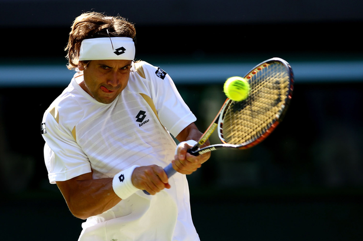

nacional
nacional 
En un duelo que se extendió a tres horas y 20 minutos, muy físico y de altísimo nivel, el escocés priva al español de las semifinales (6-3, 6-7, 6-2 y 6-3). Se enfrentará a Raonic (6-3, 3-6, 6-3 y 6-4 a Monfils).
Cayó David Ferrer y, por tanto, se fue el último representante español que quedaba en el Abierto de Australia. El alicantino no pudo con Andy Murray, que selló su presencia en las semifinales al vencer por 6-3, 6-7, 6-2 y 6-3 (después de tres horas y 20 minutos). Ahora, el de Dunblane, número dos del mundo y que ya ha disputado cuatro veces la final de Melbourne (2010, 2011, 2013 y 2015), se medirá al canadiense Milos Raonic
El pulso fue tremendo, de altísimo nivel, entre otras cosas porque se enfrentaron dos tenistas soberbios, que a pesar de tener matices muy diferenciados de juego están unidos por un nexo en común: son dos guerreros; y, como guerreros que son, no dieron por perdida ni una sola pelota. Ni una. Los intercambios fueron largos y hermosos, muy equilibrados, pero el mazo de Muray decidió el rumbo definitivo de una cita que comenzó a cielo abierto y concluyó con el techo retráctil de la Rod Laver cerrado por la irrupción de la lluvia.
